전기기사 (2009-03-01 기출문제)
1과목: 전기자기학
1. 그림과 같이 면적 S[m2]인 평행판 콘덴서의 극판 간에 판과 평행으로 두께 d1[m], d2[m]유전율 ε1[F/m], ε2[F/m]의 유전체를 삽입하면 정전용량 [F]은?
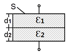
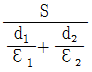
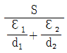
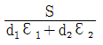
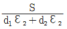
(정답률: 71%)

2. 반사계수가 T=0.8일 때 정재파비 S를 데시벨[dB]로 표시하면?
- 10 log10 1/9
- 10 log10 9
- 20 log10 1/9
- 20 log10 9
(정답률: 62%)
3. 그림과 같은 반지름 ρ[m]인 원형 영역에 걸쳐 균등 자속밀도가 B0az[T]로 측정 되었다면 그 원형 영역내의 벡터 포텐셜 A[Wb/m]는 얼마인가?
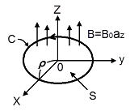
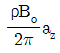
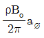
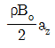
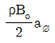
(정답률: 30%)
4. 도전율 σ, 투자율 μ인 도체에 교류 전류가 흐를 때 표피효과에 의한 침투깊이 δ는 σ와 μ, 그리고 주파수 f와 어떤 관계가 있는가?
- 주파수 f와 무관하다.
- σ가 클수록 작다.
- σ와 μ에 비례한다.
- μ가 클수록 크다.
(정답률: 71%)
5. 서로 결합하고 있는 두 코일 C1과 C2의 자기 인덕턴스가 각각 Lc1, Lc2라고 한다. 이 둘을 직렬로 연결하여 합성 인덕턴스 값을 얻은 후 두 코일 간 상호 인덕턴스의 크기 (|M|)을 얻고자 한다. 직렬로 연결 할 때, 두 코일간 자속이 서로 가해져서 보강되는 방향이 있고, 서로 상쇄되는 방향이 있다. 전자의 경우 얻은 합성인덕턴스의 값이 L1, 후자의 경우 얻은 합성 인덕턴스의 값이 L2일 때, 다음 중 맞는 식은?
- L1＜L2, |M|=(L2＋L1)/4
- L1>L2, |M|=(L1＋L2)/4
- L1＜L2, |M|=(L2-L1)/4
- L1>L2, |M|=(L1-L2)/4
(정답률: 62%)
6. 다음 중 국제 단위계 (SI)에 있어서 인덕턴스의 차원으로 옳은 것은? (단, L은 길이, M은 질량, T는 시간, I는 전류이다.)
- LMT-2I-2
- L2MT-2I-2
- L2MT-3I-2
- L-2M-1T-4I2
(정답률: 58%)
7. 커패시터를 제조하는데 A, B, C, D와 같은 4가지의 유전재료가 있다. 커패시터 내에서 단위 체적당 가장 큰 에너지 밀도를 나타내는 재료부터 순서대로 나열하면? (단, 유전재료 A, B, C, D의 비유전율은 ℇrA=8, ℇrB=10, ℇrC=2, ℇrD=4이다.)
- B＞A＞D＞C
- A＞B＞D＞C
- D＞A＞C＞B
- C＞D＞A＞B
(정답률: 80%)
8. 다음 사항 중 옳은 것은?
- ∇×H는 면전류밀도[A/m2]를 의미하며, curl H 또는 rot H와 같다.
- ∇V는 전계방향과 반대이고, 등전위면과 직각방향인 전위가 감소하는 방향으로 향한다.
- ∇·D는 단위 면적당의 발산 전속수를 의미한다.
- ∇×(∇×A)는 벡터 항등식에서 ∇(∇·A)＋∇2A와 같다.
(정답률: 47%)
9. 이종(異種)의 유전체 사이의 경계면에 전하분포가 없을 때, 경계면 양쪽에 대한 설명으로 옳은 것은?
- 전계의 법선성분 및 전속밀도의 접선성분은 서로 같다.
- 전계의 법선성분 및 전속밀도의 법선성분은 서로 같다.
- 전계의 접선성분 및 전속밀도의 접선성분은 서로 같다.
- 전계의 접선성분 및 전속밀도의 법선성분은 서로 같다.
(정답률: 71%)
10. 저항 10[Ω]의 코일을 지나는 자속이 ø = 5sin10t [A]일 때, 유도기전력에 의한 전류 [A]의 최대값은?
- 1A
- 2A
- 5A
- 10A
(정답률: 52%)
11. 반지름이 1㎝와 2㎝인 동심원통의 길이가 50㎝일 때, 이것의 정전용량은 약 몇 [pF]인가? (단, 내원통에 ＋λ[㎝]. 외원통에 -λ전[c/m]인 전하를 준다고 한다.)
- 0.56pF
- 34pF
- 40pF
- 141pF
(정답률: 41%)
12. 자기 쌍극자의 자위에 관한 설명 중 맞는 것은?
- 쌍극자의 자기모멘트에 반비례한다.
- 거리 제곱에 반비례한다.
- 자기 쌍극자 축과 이루는 각도 θ의 sinθ에 비례한다.
- 자위의 단위는 [Wb/J].이다.
(정답률: 73%)
13. E[V/m]의 평등 전계를 가진 절연유(비유전율 ℇr) 중에 있는 구형기포(구형기포) 내의 전계의 세기는 몇 [V/m]인가?
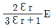
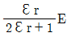
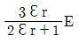
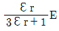
(정답률: 48%)
14. 압전기 현상에서 분극이 응력과 같은 방향으로 발생하는 현상을 무슨 효과라 하는가?
- 종효과
- 횡효과
- 역효과
- 간접효과
(정답률: 74%)
15. 평등 전계 내에 수직으로 비유전율 ℇr=3인 유전체 판을 놓았을 경우 판 내의 전속밀도 D=4×10-6[C/m2]이었다. 이 유전체의 비분극률은?
- 2
- 3
- 1×10-6
- 2×10-6
(정답률: 52%)
16. 다음 중 20℃에서 저항온도계수(temperature coefficient of resistance)가 가장 큰 것은?
- Ag
- Cu
- Al
- Ni
(정답률: 53%)
17. 대전된 도체구 A를 반지름이 2배가 되는 대전되어 있지 않는 도체구 B에 접속하면 도체구 A는 처음 갖고 있던 전계 에너지의 얼마가 손실되겠는가?
- 3/2
- 2/3
- 5/2
- 2/5
(정답률: 58%)
18. 비유전율 ℇr=4, 비투자율 ℇμ=1인 매질 내에서 주파수가 1[GHz]인 전자기파의 파장은 몇 [m]인가?
- 0.1m
- 0.15m
- 0.25m
- 0.4m
(정답률: 54%)
19. 비투자율 2500인 철심의 자속밀도가 5[Wb/m2]이고, 철심의 부피가 4×10-6[m3]일 때, 이 철심에 저장된 자기에너지는 몇 [J]인가?
- 1/π × 10-2[J]
- 2/π × 10-2[J]
- 3/π × 10-2[J]
- 5/π × 10-2[J]
(정답률: 44%)
20. 다음 중 자기회로에서 키르히호프의 법칙으로 알맞은 것은? (단, R : 자기저항, ø : 자속, N : 코일권수, I : 전류이다.)
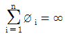
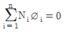
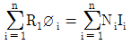
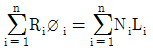
(정답률: 75%)
2과목: 전력공학
21. 송배전 계통에서 발생하는 이상전압의 내부적 원인이 아닌 것은?
- 직격뢰
- 선로의 개폐
- 아크 접지
- 선로의 이상상태
(정답률: 77%)
22. 변압기를 보호하기 위한 계전기로 사용되지 않는 것은?
- 비율차동 계전기
- 온도 계전기
- 부흐홀쯔 계전기
- 주파수 계전기
(정답률: 67%)
23. 송전선이 통신선에 미치는 유도장해를 억제 및 제거하는 방법이 아닌 것은?
- 송전선에 충분한 연가를 실시한다.
- 송전계통의 중성점 접지개소를 택하여 중성점을 리액터 접지한다.
- 송전선과 통신선의 접근거리를 크게 한다.
- 송전선측에 특성이 양호한 피뢰기를 설치한다.
(정답률: 43%)
24. 다음 중 보상 변류기에 대한 설명으로 알맞은 것은?
- 변압기의 고저압간의 전류 위상을 보상한다.
- 계전기의 오차와 위상을 보상한다.
- 전압강하를 보상한다.
- 역률을 보상한다.
(정답률: 56%)
25. 최소 동작전류 이상의 전류가 흐르면 한도를 넘은 양과는 상관없이 즉시 동작하는 계전기는?
- 반한시계전기
- 정한시계전기
- 순한시계전기
- Notting 한시계전기
(정답률: 76%)
26. 변압기 중성점의 비접지방식을 직접접지방식과 비교한 것 중 옳지 않은 것은?
- 전자유도장해가 격감된다.
- 지락 전류가 작다.
- 보호 계전기의 동작이 확실하다.
- 선로에 흐르는 영상 전류는 없다.
(정답률: 59%)
27. 저압 밸런서를 필요로 하는 방식은?
- 3상 3선식
- 3상 4선식
- 단상 2선식
- 단상 3선식
(정답률: 69%)
28. 각 수용가의 수용설비 용량이 50kW, 100kW, 80kW, 60kW, 150kW이며, 각각의 수용률이 0.6, 0.6, 0.5, 0.5, 0.4일 때 부하의 부등률이 1.3이라면 변압기 용량은 약 몇 [kVA]가 필요한가? (단, 평균 부하 역률은 80%라 한다.)
- 142
- 165
- 183
- 212
(정답률: 73%)
29. 출력 185000 [kW]의 화력발전소에서 매시간 140t의 석탄을 사용한다고 한다. 이 발전소의 열효율은 약 몇 [%]인가? (단, 사용하는 석탄의 발열량은 4000kcal/㎏이다.)
- 28.41
- 30.71
- 32.68
- 34.58
(정답률: 61%)
30. 송전방식에는 교류 송전과 직류송전방식이 있다. 교류에 비하여 직류송전방식의 장점은?
- 전압변경이 쉽다.
- 송전 효율이 좋다.
- 회전 자계를 쉽게 얻을 수 있다.
- 설비비가 싸다.
(정답률: 68%)
31. 통신선과 평행된 주파수 60Hz의 3상 1회선 송전선에서 1선 지락으로 영상전류가 100A 흐르고 있을 때, 통신선에 유기되는 전자유도전압은 약 몇 [V]인가? (단, 영상전류는 송전선 전체에 걸쳐 같으며, 통신선과 송전선의 상호 인덕턴스는 0.⑤mH/㎞이고, 양 선로의 병행 길이는 50Km이다.)
- 94
- 163
- 242
- 283
(정답률: 56%)
32. 다음 그림은 변류기의 접속도이다. 이와 같은 접속을 무슨 접속이라 하는가?
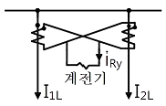
- 교차접속
- 직렬접속
- 병렬접속
- 차동접속
(정답률: 67%)
33. 중거리 송선선로의 T형 회로에서 일반 회로정수 C는 무엇을 나타내는가?
- 저항
- 어드미턴스
- 임피던스
- 리액턴스
(정답률: 75%)
34. 3상 송전선로에서 지름 5mm의 경동선을 간격 1m로 정삼각형 배치를 한 가공전선의 1선 1km당의 작용 인덕턴스는 약 몇 [mH/㎞]인가?
- 1.0mH/㎞
- 1.25mH/㎞
- 1.5mH/㎞
- 2.0mH/㎞
(정답률: 56%)
35. 화력 발전소의 기본 랭킨 사이클을 바르게 나타낸 것은?
- 보일러 → 급수펌프 → 터빈 → 복수기 → 과열기 → 다시 보일러로
- 보일러 → 터빈 → 급수펌프 → 과열기 → 복수기 → 다시 보일러로
- 급수펌프 → 보일러 → 과열기 → 터빈 → 복수기 → 다시 급수펌프로
- 급수펌프 → 보일러 → 터빈 → 과열기 → 복수기 → 다시 급수펌프로
(정답률: 68%)
36. 선로 전압 강하 보상기에 대하여 옳게 설명한 것은?
- 분로 리액터로 전압 상승을 억제 하는 것
- 직렬 콘덴서로 선로 리액턴스를 보상하는 것
- 승압기로 저하된 전압을 보상하는 것
- 선로의 전압강하를 고려하여 모선 전압을 조정하는 것
(정답률: 66%)
37. 수력 발전소에서 이용되는 서지탱크의 설치 목적이 아닌 것은?
- 흡출관을 보호하기 위함이다.
- 부하의 변동 시 생기는 수격압을 경감시킨다.
- 유량을 조절한다.
- 수격압이 압력수로에 미치는 것을 방지한다.
(정답률: 56%)
38. 다음 중 직격뢰에 대한 방호설비로 가장 정당한 것은?
- 가공지선
- 서지 흡수기
- 복도체
- 정전방전기
(정답률: 72%)
39. 400[kVA] 단상 변압기 3대를 Δ-Δ결선으로 사용하다가 1대의 고장으로 V-V 결선을 하여 사용하면 대략 몇 [kW] 부하까지 걸 수 있겠는가?
- 133
- 577
- 690
- 866
(정답률: 70%)
40. 원자로의 제어재가 구비하여야 할 조건으로 옳지 않은 것은?
- 중성자의 흡수 단면적이 적어야 한다.
- 높은 중성자속에서 장시간 그 효과를 간직하여야 한다.
- 내식성이 크고, 기계적 가공이 쉬워야 한다.
- 열과 방사선에 안정적이어야 한다.
(정답률: 61%)
3과목: 전기기기
41. 송전 계통에 접속한 무부하의 동기 전동기를 동기 조상기라 한다. 이때 동기 조상기의 계자를 과여자로 해서 운전 할 경우 옳지 않은 것은?
- 콘덴서로 작용한다.
- 위상이 뒤진 전류가 흐른다.
- 송전선의 역률을 좋게 한다.
- 송전선의 전압강하를 감소시킨다.
(정답률: 67%)
42. 브러시레서 DC 서보 모터의 특징으로 옳지 않은 것은?
- 단위 전류당 발생 토크가 크고 역기전력에 의해 불필요한 에너지를 귀환하므로 효율이 좋다.
- 토크 맥동이 작고, 안정된 제어가 용이하다.
- 기계적 시간상수가 크고 응답이 느리다.
- 기계적 접점이 없고 신뢰성이 높다.
(정답률: 73%)
43. 3300[V], 60[Hz]용 변압기의 와류손이 360 [W]이다. 이 변압기를 2750 [V], 50[Hz]에서 사용할 때 이 변압기의 와류손은 몇 [W]인가?
- 250
- 330
- 418
- 518
(정답률: 57%)
44. 동기 전동기의 전기자 전류가 최소일 때 역률은?
- ０
- 0.707
- 0.866
- 1
(정답률: 66%)
45. 100[HP], 600[V], 1200[rpm]의 직류 분권 전동기가 있다. 분권 계자저항이 400[Ω], 전기저항이 0.22[Ω] 이고, 정격부하에서의 효율이 90[%]일 때, 전부하시의 역기전력은 약 몇 [V] 인가?
- 550
- 570
- 590
- 610
(정답률: 56%)
46. 직류 분권 발전기의 전기자 저항이 0.⑤ [Ω]이다. 단자전압이 200[V], 회전수 1500[rpm] 일 때, 전기자 전류가 100[A]이다. 이것을 전동기로 사용하여 전기자 전류와 단자전압이 같을 때 회전속도는 약 몇 [rpm]인가? (단, 전기자 반작용은 무시한다.)
- 1427
- 1577
- 1620
- 1800
(정답률: 50%)
47. 단상 반파의 정류 효율은?
- (4/π2)×100[%]
- (π2/4)×100[%]
- (8/π2)×100[%]
- (π2/8)×100[%]
(정답률: 49%)
48. 3상 유도전압 조정기의 동작원리 중 가장 적당한 것은?
- 회전 자계에 의한 유도작용을 이용하여 2차 전압의 위상 전압 조정에 따라 변화한다.
- 교번자계의 전자유도 작용을 이용한다.
- 충전된 두 물체 사이에 작용하는 힘이다.
- 두 전류 사이에 작용하는 힘이다.
(정답률: 65%)
49. 변압기에서 역률 100[%]일 때의 전압 변동률 ℇ은 어떻게 표시되는가?
- % 저항강하
- % 리액턴스 강하
- % 서셉턴스 강하
- % 인덕턴스 강하
(정답률: 71%)
50. 변압기의 여자 어드미턴스를 구하는 시험법은?
- 단락시험
- 무부하시험
- 부하시험
- 충격전압시험
(정답률: 64%)
51. 변압기의 부하와 전압이 일정하고 주파수가 높아지면?
- 철손증가
- 동손증가
- 동손감소
- 철손감소
(정답률: 53%)
52. 사이클로 컨버터란?
- AC → AC로 바꾸는 장치이다.
- AC → DC로 바꾸는 장치이다.
- DC → DC로 바꾸는 장치이다.
- DC → AC로 바꾸는 장치이다.
(정답률: 64%)
53. 권선형 유도 전동기와 직류 분권 전동기와의 유사한 점으로 가장 옳은 것은?
- 정류자가 있고, 저항으로 속도조정을 할 수 있다.
- 속도 변동률이 크고, 토크가 전류에 비례한다.
- 속도가 가변이고, 기동 토크가 기동전류에 비례한다.
- 속도 변동률이 적고, 저항으로 속도조정을 할 수 있다.
(정답률: 63%)
54. 단상 유도 전동기의 기동 방법 중 기동 토크가 가장 큰 것은?
- 반발기동형
- 분상기동형
- 세이딩코일형
- 콘덴서 분상기동형
(정답률: 74%)
55. 60[Hz], 8극, 3상 유도 전동기가 전부하로 873[rpm]의 속도로 67[㎏•m]의 토크를 내고 있다. 이때의 기계적 출력[kW]은 약 얼마인가?
- 40
- 50
- 60
- 70
(정답률: 60%)
56. 단상 정류자 전동기의 일종인 단상 반발 전동기에 해당되는 것은?
- 시라게 전동기
- 아트킨손형 전동기
- 단상 직권 정류자 전동기
- 반발유도 전동기
(정답률: 52%)
57. 다음 중 대형직류 전동기의 토크를 측정하는데 가장 적당한 방법은?
- 와전류 제동기법
- 프로티 브레이크 법
- 전기동력계법
- 반환부하법
(정답률: 60%)
58. 단락비가 큰 동기 발전기에 관한 설명 중 옳지 않은 것은?
- 전압 변동률이 크다.
- 전기자 반작용이 작다.
- 과부하 용량이 크다.
- 동기 임피던스가 작다.
(정답률: 64%)
59. 3상 유도 전동기에서 2차 저항을 증가하면 기동 토크는?
- 증가한다.
- 감소한다.
- 제곱에 반비례 한다.
- 변하지 않는다.
(정답률: 42%)
60. 4극 60 [Hz]의 3상 동기 발전기가 있다. 회전자 주변속도를 200[m/s] 이하로 하려면 회전자의 지름을 약 몇 [m]로 하여야 하는가?
- 2.1
- 2.6
- 3.1
- 3.5
(정답률: 44%)
4과목: 회로이론 및 제어공학
61. 분포 정수회로에서 저항 0.5[Ω/㎞], 인덕턴스 1[μH/㎞], 정전용량 6[μF/㎞], 길이 250[km]의 송전선로가 있다. 무왜형 선로가 되기 위해서는 컨덕턴스 [℧/㎞]는 얼마가 되어야 하는가?
- 1
- 2
- 3
- 4
(정답률: 63%)
62. 일정 전압의 직류 전원에 저항을 접속하고 전류를 흘릴 때 이 전류값을 20[%] 증가시키기 위해서는 저항값을 몇 배로 하여야 하는가?
- 1.25배
- 1.20배
- 0.83배
- 0.80배
(정답률: 59%)
63. 4단자 정수가 각각 A=5/3, B=800, C=1/450, D=5/3일 때, 전달정수 θ는 얼마인가?
- logₑ 2
- logₑ 3
- logₑ 4
- logₑ 5
(정답률: 50%)
64. RL 직렬회로에 v=80＋141.4sin(3ωt＋π/3)[V]를 가할 때 전류 [A]의 실효값은 약 얼마인가? (단, R=4[Ω], wL=1[Ω]이다.)
- 24.2
- 26.3
- 28.3
- 30.2
(정답률: 46%)
65. f(t)=te-3ᵗ일 때, 라플라스 변환은?
- 1/(s＋3)2
- 1/(s-3)2
- 1/(s-3)
- 1/(s＋3)
(정답률: 62%)
66. 다음 중 전달함수에 관한 표현으로 옳은 것은?
- 전달함수의 분모의 차수는 초기값에 따라 결정된다.
- 2계 회로에서 전달함수의 분모는 s의 2차식이 된다.
- 전달함수의 분자의 차수에 따라 분모의 차수가 결정 된다.
- 2계회로의 분모와 분자의 차수의 차는 s의 1차식이 된다.
(정답률: 53%)
67. 6[Ω]과 2[Ω]의 저항 3개를 그림과 같이 연결하였을 때, a, b 사이의 합성저항은 몇 [Ω]인가?
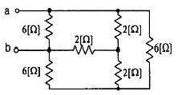
- 1
- 2
- 3
- 4
(정답률: 48%)
68. Δ결선된 3상 회로에서 상전류가 다음과 같을 때 선전류 I1, I2, I3 중에서 그 크기가 가장 큰 것은 몇 [A]인가?
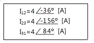
- 2.31
- 4.0
- 6.93
- 8.0
(정답률: 52%)
69. 그림과 같은 직류 LC 직렬 회로에 대한 설명 중 옳은 것은?
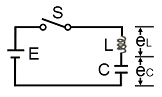
- eL은 진동함수이나 ec는 진동하지 않는다.
- eL의 최대치가 2E까지 될 수 있다.
- eC의 최대치가 2E까지 될 수 있다.
- C의 충전전하 q는 시간 t에 무관하다.
(정답률: 53%)
70. 내부에 기전력이 있는 회로가 있다. 이 회로의 한 쌍의 단자 전압을 측정 하였을 때 70[V] 이고, 또 이 단자에서 본이 회로의 임피던스가 60[Ω]이라 한다. 지금 이 단자에 40[Ω]의 저항을 접속하면, 이 회로에 흐르는 전류는 몇 [A]인가?
- 0.5
- 0.6
- 0.7
- 0.8
(정답률: 64%)
71. G(s)=1/(1＋Ts)와 같이 주어진 제어시스템에서 절점 주파수의 이득은 약 몇 [dB]인가?
- -2
- -3
- -4
- -5
(정답률: 47%)
72.
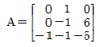
의 고유값은?- -1, -2, -3
- -2, -3, -4
- -1, -2, -4
- -1, -3, -4
(정답률: 39%)
73. 그림과 같은 회로의 출력 Z는 어떻게 표현되는가?
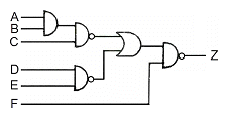
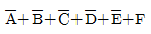
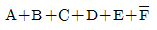
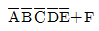
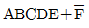
(정답률: 64%)
74. 과도 응답이 소멸되는 정도를 나타내는 감쇠비 (decay ratio)는?
- 최대 오버슈트/제 2오버슈트
- 제 3오버슈트/제 2오버슈트
- 제 2오버슈트/최대 오버슈트
- 제 2오버슈트/제 3 오버슈트
(정답률: 71%)
75. 그림과 같은 요소는 제어계의 어떤 요소인가?
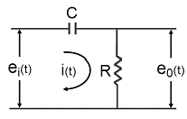
- 적분요소
- 미분요소
- 1차 지연 요소
- 1차 지연 미분 요소
(정답률: 62%)
76. 어떤 제어계통에서 정상 위치 편차가 유한값일 때 이 제어계는 무슨 형인가?
- 0형
- 1형
- 2형
- 3형
(정답률: 50%)
77. G(jω)=K/((1＋2jω)(1＋jω))의 이득 여유가 20[dB]일 때, K의 값은?
- 0
- 1
- 10
- 0.1
(정답률: 43%)
78. 잔류 편차가 발생하는 제어는?
- 비례 제어
- 적분제어
- 비례 미분 적분 제어
- 비례 적분 제어
(정답률: 67%)
79. 나이퀴스트 경로에 포위되는 영역에 특성 방정식의 근이 존재하지 않으면 제어계는 어떻게 되는가?
- 불안정
- 안정
- 진동
- 발산
(정답률: 44%)
80. G(s)H(s)=(K(s＋1)/(s(s+2)(s+3))에서 근궤적의 수는?
- 1
- 2
- 3
- 4
(정답률: 62%)
5과목: 전기설비기술기준 및 판단기준
81. 고압용 또는 특별 고압용 개폐기로써 부하 전류를 차단하기 위한 것이 아닌 개폐기의 차단을 방지하기 위한 조치가 아닌 것은?
- 개폐기의 조작위치에 부하전류 유무 표시
- 개폐기 설치 위치의 1차측에 방전장치 시설
- 터블렛 등을 사용함으로서 부하 전류가 통하고 있을 때에 개로조작을 방지하기 위한 조치
- 개폐기의 조작위치에 전화기, 기타의 지령장치
(정답률: 41%)
82. 백열전등 또는 방전등에 전기를 공급하는 옥내 전로의 대지전압은 몇 [V]이하를 원칙으로 하는가?
- 300
- 380
- 440
- 600
(정답률: 72%)
83. 고압 가공인입선이 케이블 이외의 것으로서 그 아래에 위험 표시를 하였다면 전선의 지표상 높이는 몇 [m]까지로 감할 수 있는가?
- 2.5
- 3.5
- 4.5
- 5.5
(정답률: 66%)
84. 다음 중 10 경간의 고압가공전선으로 케이블을 사용할 때 이용되는 조가용선에 대한 설명으로 옳은 것은?(관련 규정 개정전 문제로 여기서는 기존 정답인 3번을 누르면 정답 처리됩니다. 자세한 내용은 해설을 참고하세요.)
- 조가용선은 아연도 철연선으로 단면적 14[mm2]이상으로 하여야 하며, 제 2종 접지공사를 시행한다.
- 조가용선은 아연도 철연선으로 단면적 30[mm2]이상으로 하여야 하며, 제 1종 접지공사를 시행한다.
- 조가용선은 아연도 철연선으로 단면적 22[mm2]이상으로 하여야 하며, 제 3종 접지공사를 시행한다.
- 조가용선은 아연도 철연선으로 단면적 8[mm2]이상으로 하여야 하며, 제 3종 접지공사를 시행한다.
(정답률: 72%)
85. 풀장용 수중조명등에 전기를 공급하기 위하여 사용되는 절연 변압기에 대한 설명으로 옳지 않은 것은?(관련 규정 개정전 문제로 여기서는 기존 정답인 3번을 누르면 정답 처리됩니다. 자세한 내용은 해설을 참고하세요.)
- 절연변압기 2차측 전로의 사용 전압은 150V 이하이어야 한다.
- 절연변압기 2차측 전로의 사용 전압이 30V 이하인 경우에는 1차권선과 2차권선 사이에 금속제의 혼촉 방지판이 있어야 한다.
- 절연변압기의 2차측 전로에는 반드시 제 2종 접지공사를 하며, 그 저항값은 5Ω이하가 되도록 하여야 한다.
- 절연변압기 2차측 전로의 사용 전압이 30V를 넘는 경우에는 그 전로에 지락이 생긴 경우 자동적으로 전로를 차단하는 차단장치가 있어야 한다.
(정답률: 58%)
86. "지선의 안전율은 ( ㉮ ) 이상일 것, 이 경우에 허용 인장 하중의 최저는 ( ㉯ )kN으로 한다." 다음 중 ( ㉮ ), ( ㉯ )에 들어갈 내용으로 알맞은 것은?
- 2.0, 2.1
- 2.0, 4.31
- 2.5, 2.1
- 2.5, 4.31
(정답률: 65%)
87. 시가지에 시설하는 특별고압 가공전선로용 지지물로 사용될 수 없는 것은? (단, 사용전압이 170000V 이하의 전선로인 경우이다. )
- 철근콘크리트주
- 목주
- 철탑
- 철주
(정답률: 69%)
88. 동일 지지물에 고압 가공전선과 저압 가공전선을 병가할 경우 일반적으로 양 전선간의 이격거리는 몇 [㎝] 이상이어야 하는가?
- 50
- 60
- 70
- 80
(정답률: 47%)
89. 시가지에 시설하는 고압 가공전선으로 경동선을 사용하려면 그 지름은 최소 몇 [㎜] 이어야 하는가?
- 2.6
- 3.2
- 4.0
- 5.0
(정답률: 37%)
90. 다음 중 발전기를 전로로부터 자동적으로 차단하는 장치를 시설하여야 하는 경우에 해당되지 않는 것은?
- 발전기에 과전류가 생긴 경우
- 용량이 500kVA 이상의 발전기를 구동하는 수차의 압유장치의 유압이 현저히 저하한 경우
- 용량이 100kVA 이상의 발전기를 구동하는 풍차의 압유장치의 유압, 압축공기장치의 공기압이 현저히 저하한 경우
- 용량이 5000kVA 이상인 발전기의 내부에 고장이 생긴 경우
(정답률: 52%)
91. 건조한 장소에 시설하는 저압용의 개별 기계기구에 전기를 공급하는 전로 또는 개별 기계기구에 전기용품안전관리법의 적용을 받는 인체 감전 보호용 누전차단기를 시설하면, 외함의 접지를 생략할 수 있다. 이 경우의 누전차단기의 정격으로 알맞은 것은?
- 정격 전류감도 30mA이하, 동작시간 0.03초 이하의 전류 동작형
- 정격 전류감도 45mA이하, 동작시간 0.01초 이하의 전류 동작형
- 정격 전류감도 300mA이하, 동작시간 0.3초 이하의 전류 동작형
- 정격 전류감도 450mA이하, 동작시간 0.1초 이하의 전류 동작형
(정답률: 70%)
92. 발전소 변전소에서 특별고압전로의 접속 상태를 모의모선의 사용 등으로 표시하지 않아도 되는 것은?
- 2회선의 단일 모선
- 2회선의 복모선
- 3회선의 단일 모선
- 4회선의 복모선
(정답률: 65%)
93. 특별 제3종 접지공사를 하여야 하는 금속체와 대지간의 전기 저항치가 몇 [Ω] 이하인 경우에는 특별 제 3종 접지 공사를 한 것으로 보는가?(오류 신고가 접수된 문제입니다. 반드시 정답과 해설을 확인하시기 바랍니다.)
- 3
- 5
- 8
- 10
(정답률: 61%)
94. 345kV의 전압을 변압하는 변전소가 있다. 이 변전소에 울타리를 시설하고자 하는 경우, 울타리의 높이와 울타리로부터 충전부분까지의 거리의 합계는 몇 [m] 이상으로 하여야 하는가?
- 7.42
- 8.28
- 10.15
- 12.31
(정답률: 62%)
95. 다음 중 사용 전압이 400V 이상인 옥내 저압의 이동전선으로 사용 할 수 없는 것은?(관련 규정 개정으로 삭제된 문제이니다. 기존 정답은 1번이며 여기서는 1번을 누르면 정답 처리 됩니다. 자세한 내용은 해설을 참고하세요.)
- 1종 캡타이어 케이블
- 3종 캡타이어 케이블
- 3종 클로로프렌 캡타이어 케이블
- 4종 클로로프렌 캡타이어 케이블
(정답률: 66%)
96. 전체의 길이가 18[m]이고, 설계 하중이 6.8kN인 철근콘크리트주를 지반이 튼튼한 곳에 시설하려고 한다. 기초 안전율을 고려하지 않기 위해서는 묻히는 깊이를 몇 [m]이상으로 시설하여야 하는가?
- 2.5
- 2.8
- 3.0
- 3.2
(정답률: 60%)
97. 특별고압 가공 전선로의 지지물에 시설하는 통신선 또는 이에 직접 접속하는 가공 통신선의 높이는 철도 또는 궤도를 횡단하는 경우에는 레일면상 몇 [m] 이상으로 하여야 하는가?
- 5.0
- 5.5
- 6.0
- 6.5
(정답률: 68%)
98. 다음 중 아크용접장치의 시설 기준으로 옳지 않은 것은?
- 용접변압기는 절연 변압기일 것.
- 용접변압기의 1차측 전로 대지전압은 400[V]이하 일 것
- 용접변압기 1차측 전로에는 용접 변압기에 가까운 곳에 쉽게 개폐할 수 있는 개폐기를 시설할 것
- 피용접재 또는 이와 전기적으로 접속되는 받침대, 정반 등의 금속체에는 제 3종 접지 공사를 할 것
(정답률: 51%)
99. 직류 귀선의 궤도 근접 부분이 금속제 지중 관로와 1km 안에 접근하는 경우 금속제 지중관로에 대한 전식작용의 장해를 방지하기 위한 귀선의 시설방법으로 다음 중 옳은 것은?
- 귀선은 정극성으로 할 것
- 귀선용 레일의 이음매의 저항을 합친 값은 그 구간의 레일 자체의 저항의 30% 이하로 유지할 것
- 귀선용 궤조는 특수한 곳 이외에는 길이 50m 이상이 되도록 연속하여 용접할 것
- 귀선의 궤도 근접 부분에 1년간의 평균 전류가 통할 때에 생기는 전위차는 그 구간안의 어느 2점 사이에서도 2V 이하일 것
(정답률: 48%)
100. "가공 전선과 안테나 사이의 이격거리는 저압은 ( ㉮ )이상, 고압은 ( ㉯ ) 이상일 것" 다음 중 ( ㉮ ), ( ㉯ )에 들어갈 내용으로 알맞은 것은?
- 30㎝, 60㎝
- 60㎝, 90㎝
- 60㎝, 80㎝
- 80㎝, 120㎝
(정답률: 54%)